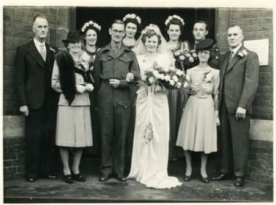

See also
- George HOWELL's parents: William Henry HOWELL (1890-1983) and Blodwen Anne DAVIES (1890-1959)
- Vera STILTS's parents: Henry Charles STILTZ (1891-1955) and Jewell DUNN (1886-1975)
- Vera STILTS's brother: Victor Henry STILTS (1920-1988)
Family of George Emerson HOWELL and Vera Jewell STILTS

Family of George Emerson HOWELL and Vera Jewell STILTS, 1945
Husband:
George Emerson HOWELL (1922-2016)
Wife:
Vera Jewell STILTS (1923-2021)
Children:
Marriage:
3 Sep 1945
Harringay, Middlesex, England1
Address: St Paul's Church, Wightman Road
Husband: George Emerson HOWELL

George Emerson HOWELL, 1922, age 0
Name:
George Emerson HOWELL
Sex:
Male
Father:
Mother:
Birth:
6 Nov 1922
Barry, Glamorganshire, Wales2
Occupation:
frm Aug 1939 to Oct 1939 (age 16)
Clerical Officer in the Ministry of Agriculture & Fisheries; Shoreditch, Middlesex, England3
Address: 80 Leonard Street
Leonard Street was ".. an old furniture warehouse in the Shoreditch area of London. It had been condemned for housing furniture (floors unsafe probably!) but was thought to be habitable for housing civil servants! It was a dreadful place and in a pretyy insalubrious area."
Residence:
Aug 1939 (age 16)
Tufnell Park, Middlesex, England4
Address: 142 Huddleston Road
Lodging house found through neighbours and friends in Swansea
Occupation:
frm Oct 1939 to Dec 1941 (age 16-19)
Clerical Officer in the Ministry of Agriculture & Fisheries; St Annes on Sea, Lancashire, England5
The ministry was evacuated to St Annes following the declaration of war.
Residence:
frm Oct 1939 to Dec 1941 (age 16-19)
St Annes on Sea, Lancashire, England
He lived at two different addresses in the town. The landlady of the second was Mrs. Farrimond
Miltary Service:
frm 4 Dec 1941 to Dec 1946 (age 19-24)
Service: Royal Signals
Detail: He served in Palestine, Italy and Egypt; reaching the rank of Captain by the time he was demobbed.
Residence:
3 Sep 1945 (age 22)
West Cross, Swansea, Glamorganshire, England1
Address: 42 Druslyn Road
Occupation:
3 Sep 1945 (age 22)
His Majesty's Forces; West Cross, Swansea, Glamorganshire, England1
Occupation:
1948 (age 25-26)
Civil Servant in the Ministry of Agriculture, Fisheries and Food.
Residence:
frm Oct 1971 to Oct 2003 (age 48-80)
Copthorne, Shrewsbury, Shropshire, England
Address: 66, Larkhill Road
Retirement:
c. 1980 (age 58)
Residence:
frm Oct 2003 to Jun 2016 (age 80-93)
Longden Coleham, Shrewsbury, Shropshire, England
Address: 23, Carline Crescent
Witness:
16 Jun 2010 (age 87)
George Emerson HOWELL witnessed the marriage of Gareth Henry HOWELL and Varina Helen NEWTON on 16 June 2010 in Huntingdon, Cambridgeshire, England
Death:
20 Jun 2016 (age 93)
Longden Coleham, Shrewsbury, Shropshire, England6
Cause: Old age
Address: 23 Carline Crescent
Cremation:
1 Jul 2016 (age 93)
Elmsley, Shrewsbury, Shropshire, England7
Address: Emsley Crematorium, London Road
Wife: Vera Jewell STILTS

Vera Jewell STILTS, 1945, age 22
Name:
Vera Jewell STILTS
Sex:
Female
Father:
Mother:
Birth:
4 Feb 1923
Tottenham, Middlesex, England8
Address: 11 Bruce Grove
Residence:
27 Feb 1923 (age 0)
Hornsey, Middlesex, England8
Address: 54 Wightman Road
Address:
1924 (age 0-1)
Harringay, Middlesex, England
Address: 54 Wightman Road
Occupation:
1939 (age 15-16)
Civil Servant in the Ministry of Food
Occupation:
frm 1945 (age 21-22)
Housewife
Residence:
3 Sep 1945 (age 22)
Harringay, Middlesex, England1
Address: 54 Wightman Road
Address:
frm 1948 to Oct 1951 (age 24-28)
Harringay, Middlesex, England
Address: 22 Umfreville Road
Address:
frm 1951 to 1971 (age 27-48)
Hainault, Ilford, Essex, England
Address: 4 Lancelot Road
Residence:
frm 1971 to 2003 (age 47-80)
Copthorne, Shrewsbury, Shropshire, England
Address: 66, Larkhill Road
Residence:
frm 2003 to 2020 (age 79-97)
Longden Coleham, Shrewsbury, Shropshire, England
Address: 23, Carline Crescent
Witness:
20 Jun 2016 (age 93)
Vera Jewell STILTS witnessed the death of George Emerson HOWELL on 20 June 2016 in Longden Coleham, Shrewsbury, Shropshire, England
Witness:
1 Jul 2016 (age 93)
Role as Witness Cremation of George HOWELL
Residence:
frm 3 Jul 2020 to 1 Dec 2020 (age 97)
Eaton Ford, St Neots, Cambridgeshire, England
Address: Nelson Lodge Care Home, Whinfell Close
Residence:
frm 1 Dec 2020 to 9 Jan 2021 (age 97)
Eaton Ford, St Neots, Cambridgeshire, England9
Address: Ford House, St Neots Road, Eaton Ford, St Neots, Cambridgeshire, England
Occupation:
9 Jan 2021 (age 97)
Housewife, Widow of George Emerson HOWELL; Eaton Ford, St Neots, Cambridgeshire, England9 10
Residence:
9 Jan 2021 (age 97)
Eaton Ford, St Neots, Cambridgeshire, England10
Address: Ford House, St Neots Road, Eaton Ford, St Neots, Cambridgeshire, England
Religion:
9 Jan 2021 (age 97)
CofE10
Occupation:
9 Jan 2021 (age 97)
Housewife, Widow of George Emerson HOWELL11
Death:
9 Jan 2021 (age 97 yrs 11 mns)
Cause: Dementia, Chronic Kidney Disease, Hypertension
Address: Ford House, St Neots Road, Eaton Ford, St Neots, Cambridgeshire, England
Cremation:
4 Feb 2021
Elms Farm, Bedford, Bedfordshire, England11
Address: Norse Road Cemetry
role=mourner: Gareth & Varina Howell, Tom Howell, Zoha Bennett, Jennifer Howell, Adam ireland, Nick Howell
Child 1: Alan George HOWELL
Name:
Alan George HOWELL
Sex:
Male
Child 2: Gareth Henry HOWELL
Name:
Gareth Henry HOWELL
Sex:
Male
Sources
- 1.
Marriage certificate of George Emerson HOWELL and Vera Jewell STILTS, 3 September 1945, Gareth Howell Archives.
- 2.
Findmypast England & Wales Births 1837-2006. Findmypast.co.uk. Web: www.findmypast.co.uk.
- 3.
"Reflections" - a very personal review by George Emerson Howell, circa 2011, Gareth Howell Archives, Part II The Second World War, P25.
- 4.
Ibid. Part II The Second World War, P26.
- 5.
Ibid. Section II The Second Waorld War p30.
- 6.
2016 Death Certificate for George Emerson Howell. Gareth Howell Archives.
- 7.
Shropshire Star.
- 8.
Birth certificate of Vera Jewell Stilts, 4 February 1923, Gareth Howell Archives.
- 9.
Death certificate of Vera J HOWELL, 9 January 2021, Gareth Howell Archives.
- 10.
2021 Death Certificate for Vera Jewell HOWELL (nee STILTS, (227). Custom Id: DEAT-ENG-CAMB-2021-STILTS_VERA; Gareth Howell Archives.
- 11.
2021 Cremation of vera Jewell HOWELL (nee STILTS). Custom Id: CREM-ENG-BEDS-2021-STILTS_Vera;